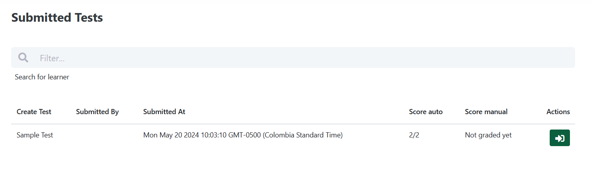

If you want to create a new test, you can click on "Create test" in the menu or on the dashboard.

You will get a form. Fill in all the required fields. By default time limit for a test is 60 minutes. To change it you can click on "Setings" in the top right corner.

In the appearing window, you can change time limit for a test in minutes.

After creating a test, you will be redirected to a page with the list of tests. Here you can copy the link of the test and to send it to a Spanish learner.
The test is created and the student have a link. After student will submit the test you can see it in the list of submitted tests.
By clicking on the "Actions" you will be redirected to the page with details of submitted test. There already will be score for all autograded questions. Open questions have to be graded manualy. For that on the top right corner you can find a button "Edit Score".

Here you have the opportunity to check every open question and grade it separetly.